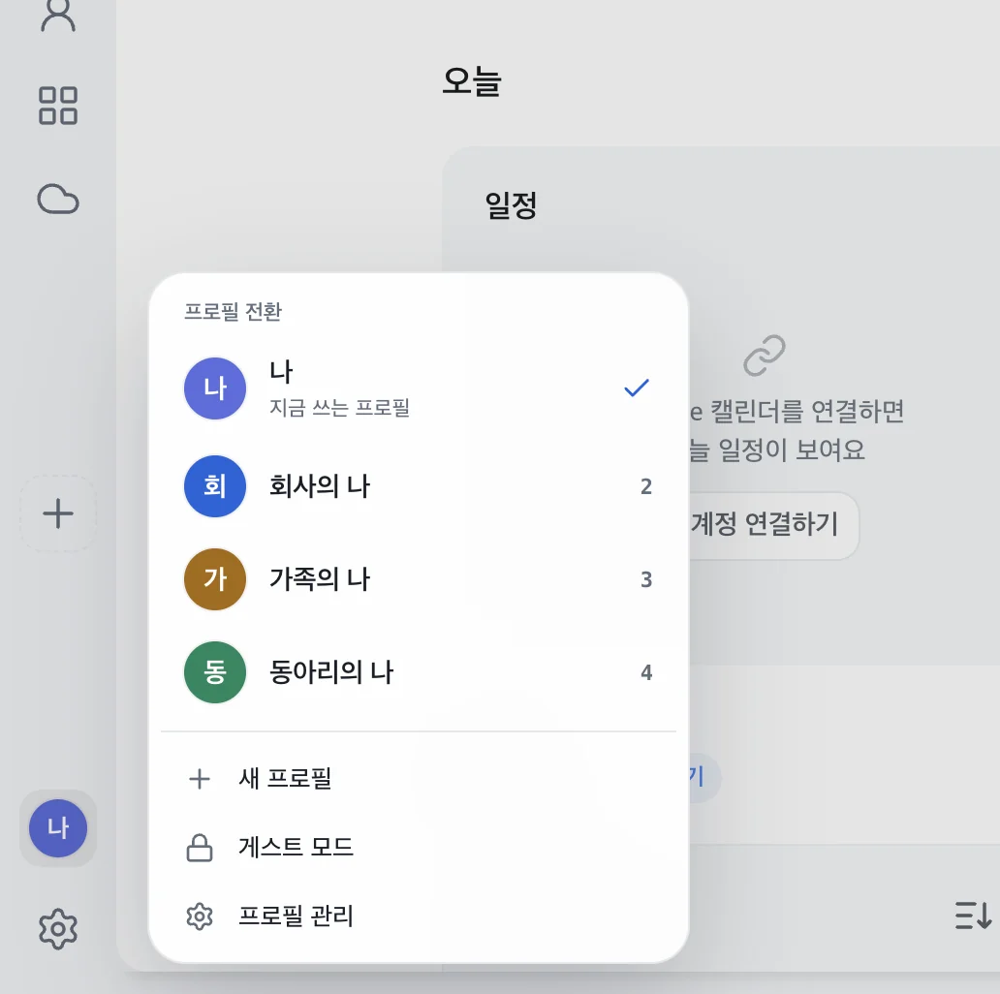
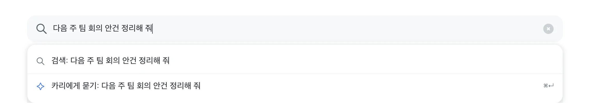
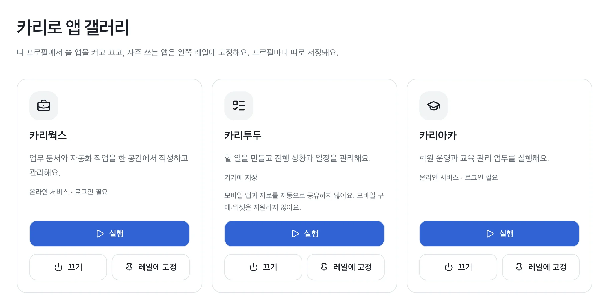
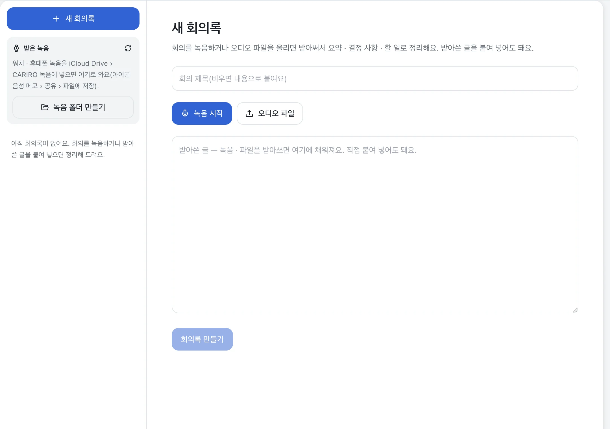

역할 프로필
회사의 나와
가족의 나를
나눠 쓰세요
역할마다 프로필을 만들면 탭, 로그인, 앱이 따로 저장돼요.
왼쪽 아래 아바타로 바로 바꾸고, 두 번 누르면 바로 전 프로필로 돌아가요.

주소창
검색은 검색대로
부탁은 카리에게
주소창에 치고 엔터를 누르면 검색해요.
같은 말을 ⌘↵ 로 보내면 카리가 대신 해 줘요.

앱 갤러리
필요한 앱만
켜서 쓰세요
카리웍스, 카리투두, 카리아카, 회의록을 플러그인처럼 켜고 꺼요.
프로필마다 따로 고르고, 자주 쓰는 앱은 왼쪽에 고정해요.

회의록
녹음하면
회의록이 돼요
회의를 녹음하거나 오디오 파일을 올리면 받아써서
요약 · 결정 사항 · 할 일로 정리해요.
받아쓰기는 OpenAI 키를 넣어 써요.

그리고
매일 쓰는 데
필요한 건 다 있어요
이전 브라우저에서 그대로
처음 열 때 북마크, 저장한 비밀번호, 방문 기록을 한 번에 가져와요.
아침 브리핑
켜 두면 메일 · 일정 · 들어온 일을 한 장으로 모아 알려 줘요.
인증서
쓰던 공동인증서를 카리로로 가져와 인증서가 필요한 사이트에서 써요.
방해 없는 화면
탭 줄은 마우스를 위로 올릴 때만 내려와요. 설정에서 바꿀 수 있어요.
내 업무
프로젝트와 들어온 일을 홈에서 보고, AI 로 할 일을 더해요.
게스트 모드
잠깐 빌려 쓸 때는 게스트로 열어요. 닫으면 기록이 남지 않아요.
학교 · 기관
기관 자료는
기관 안에서만
카리로 기관판은 기관 서버에 연결해 써요.
AI 질문과 기관 자료는 기관 서버에서 처리해요.
안심
믿고 쓸 수 있게
애플 공증을 받은 앱
애플이 확인한 개발자 서명이 있어 Mac 에서 바로 열려요.
프로필마다 따로
로그인과 기록이 프로필마다 따로 저장돼 서로 섞이지 않아요.
켤 때만 보내요
브리핑은 켜야만 동작하고, 정리할 때도 메일 보낸 사람 · 제목과 일정 제목만 보내요.
다운로드
지금 받아 보세요
버전 0.1.14 · 애플 공증을 받은 설치 파일이에요
Windows
준비하고 있어요. 나오면 이 페이지에서 받을 수 있어요.
준비 중- 받은 CARIRO-0.1.14-arm64.zip 을 두 번 눌러 풀어요
- CARIRO 를 응용 프로그램 폴더로 끌어다 놓아요
- 응용 프로그램에서 CARIRO 를 열어요. 처음 한 번 이전 브라우저에서 가져올지 골라요
파일 확인값(SHA-256)
039b9d99121cf2cc1b94324d89fb65f758e5082affddb7e8b900b103af6a8ef6
자주 묻는 질문
Windows 판은 언제 나와요?
준비하고 있어요. 나오면 이 페이지에서 바로 받을 수 있어요.
인텔 Mac 에서도 되나요?
지금은 Apple Silicon(M1 이상) Mac 만 지원해요.
이전 브라우저에서 쓰던 걸 옮길 수 있나요?
처음 열 때 북마크, 저장한 비밀번호, 방문 기록을 가져올 수 있어요. 이 Mac 안에서만 옮기고 다른 곳으로 보내지 않아요.
새 버전은 어떻게 받아요?
이 페이지에서 새 설치 파일을 받아 다시 설치하면 돼요. 쓰던 프로필과 기록은 그대로예요.
회의록 받아쓰기에 무엇이 필요해요?
설정에서 OpenAI 키를 넣으면 녹음과 오디오 파일을 받아써요. 받아쓴 글을 직접 붙여 넣어도 정리해요.
학교나 회사에서 쓰려면요?
기관 서버에 연결해 쓰는 기관판이 있어요. contact@goatheaven.com 으로 문의해 주세요.